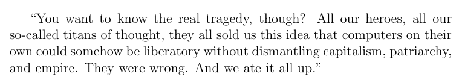

freewriting, with a couple hours of edits.
GXFR x ALC - Griselda Alchemy (Full Mixtape) - Conway, Benny, Westside Gunn x The Alchemisti only had enough time to focus on one thing. and the one thing i chose to focus on was bars. and the only way i've found effective to write bars is to keep learning about myself. and the only way i've found effective to learn about myself is to live. and the only way to live that i've found effective is in the moment. fundamental truths feel like superficial truths when heard without being experienced.
the only way to understand those truths one day is to keep living---the moment in front of me feels blank the moment before i enter it. i haven't figured out how to understand animation without frames. that has always been confusing to me emotionally, and as i learned more about myself, i realized that emotion was associated with an intellectual interpretation (there is some aspect of intelligence which matches emotions with adaptive thought). i have to sort it out very quickly because the moment in front of me is approaching fast. but how fast? what is my frame rate? what is the rate at which life moments carousel past my? like a slide show. with physical slides. or whatever the abstraction of physical a life moment is.
the next moment has landed after i have found a spot to land it or on it. finding a spot to land that is adaptvie takes time, especially when you face something which strongly contrasts your reality. am i really not woke? am i that brainwashed? did i internalize what they said so deeply?
hip hop. i already had the flow. i developed it to a good-enough place, so that i could sit back, relax and write bars one day. although i didn't know i was going to relax. i am glad i will. the goal is to get there and the means is to live life without guessing too much what the next frame will be. when i had lots of flow with less-than-full bars, i knew how to speak but didn't have anything to say. or, i did have an emotion to express but not enough authentic analogies to frame it with. in order to have something meaningful to say, it should be as close to my truth that i can make it. once i know it's truth, i know. the challenge after that is no longer trust, but courage to express.
we are in this pseudo-freestyle together, learning how to land the next bar, the next word, the next syllable, or part of syllable, 16ths, 32nds, 64ths, always dividing by two, before or after, attacking or relaxing, which then pushes me the other way, harder, it's about tightening that balance not by practicing how to balance, but learning what my center is.
learning how to balance is flow. having a center to balance around is bars. this is the duality of hip hop. people know what bars sound like so they try to recreate them with flow-type elements: word choice, cadence, word order, placement of references (both cultural and those determined by the bar structure related to word order). again it's like learning programming without making a program. you can do it, but then your not learning how to program, you are learning a language by mimicking syntax with a sparse sense of semantics which is like learning a language without having something to say. this is what i want to fight. not directly in some form of opposition, but in myself, by committing to hone my truths.
that gxfr album has to be heard from start to finish to enjoy it fully. west in the beginning, with a perfectly casual foreplay with the beat, leaving the listener wondering if this is the verse or if it's still the hype. that's when you know that the hype is real.
understanding bars means looking past the facade of words, cadence and wordplay and feeling something deeper. something that cannot be understood by language. or it's a part of language which transcends itself, goes beyond sound and meaning: care, honesty, knowledge, compassion, and responsibility. in other words, bars are the language of love. the love for the genre. the love for my past, present and future selves and subselves. it's my love for hip hop. it's not the words that matter exclusively. they matter because of the emotion and experience behind them. and somehow i just know something is real when i hear it. something about how the syllables land. how the bars lands on the next moment feels solid. balanced. measured. not glorified. an artist narrating their story. painting visuals in my mind with the fullest expression of their self.
it's the fullest expression because when every bar hits, throughout an album, you are given enough information to simulate their experience in your mind. a story told becomes a story lived because of bars. bars are the components of the model that is the artist's expression of themselves. a high resolution projection of self onto the medium of music and language. a well designed bar contains the write mixture of sound and language to help you, dear listener, experience what the artist experienced in the moment(s) that the bar is explaining. it's about empathy. communicating and connecting with each other. having you understand something about me using analogies of the root emotion.
flow is one component of the bar system. a very effective one, but in reality, the shine on the jewel. a good start, for finding a rhythm within which to fill pure ground truth.
in so many words, gxfr is real hip hop, in 2020, and most likely for awhile. we need this vibe, maybe for the rest of our lives (even though it helped a tiny bit that trump lost the election).
i have a theory that the people in their 30s and 40s right now, in 2020, are unique in the history of the human race because we, with varying degrees of experience, know what life was before social media started to take over. gxfr is a specific implementation in a particular environment (hip hop) of the concept in the following quote (which i can't figure out where it's from):
